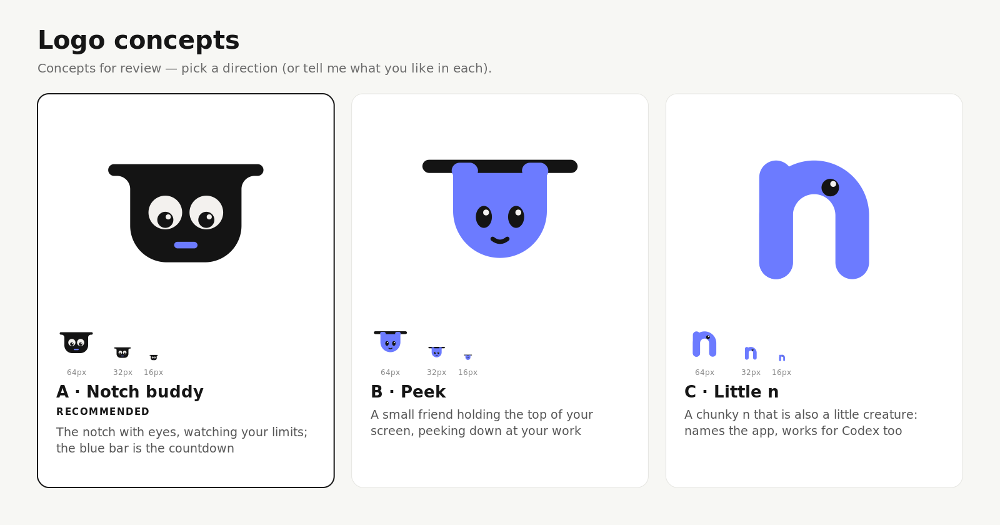
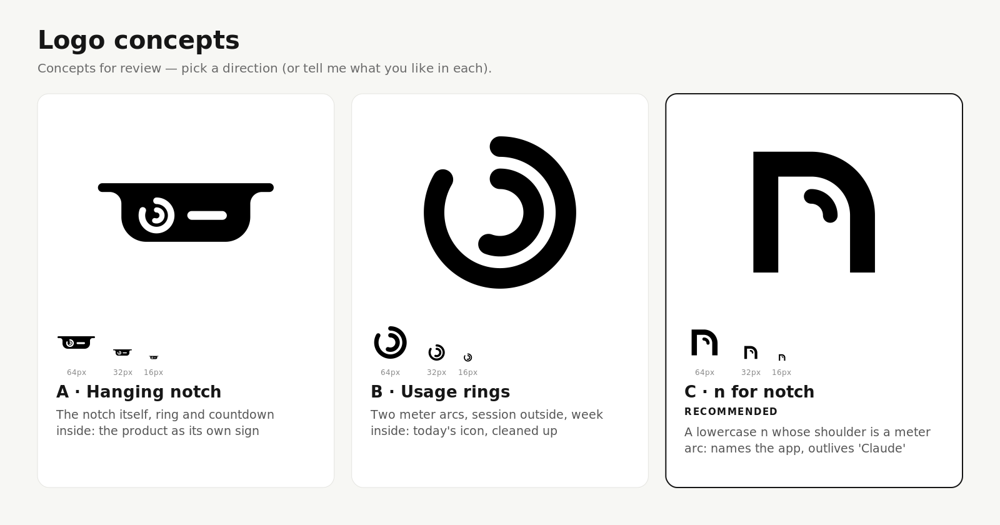

Notch logo concepts
Pick a direction, or say what you like in each.
Round 2: modern, a little cartoon
Notch buddy, Peek and Little n. Full test sheet: sizes, backgrounds, app icon, browser tab, shelf test

Round 1: geometric
Hanging notch, Usage rings and n for notch. Full test sheet
